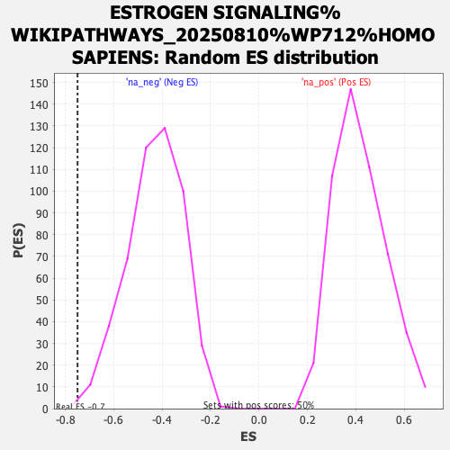

Profile of the Running ES Score & Positions of GeneSet Members on the Rank Ordered List
| Dataset | ranked_gene_list |
| Phenotype | NoPhenotypeAvailable |
| Upregulated in class | na_neg |
| GeneSet | ESTROGEN SIGNALING%WIKIPATHWAYS_20250810%WP712%HOMO SAPIENS |
| Enrichment Score (ES) | -0.7496179 |
| Normalized Enrichment Score (NES) | -1.7507021 |
| Nominal p-value | 0.002008032 |
| FDR q-value | 0.19657266 |
| FWER p-Value | 0.994 |
| SYMBOL | RANK IN GENE LIST | RANK METRIC SCORE | RUNNING ES | CORE ENRICHMENT | |
|---|---|---|---|---|---|
| 1 | JUN | 5028 | 1.437 | -0.2876 | No |
| 2 | FOS | 5080 | 1.402 | -0.2720 | No |
| 3 | GNB1 | 7594 | 0.177 | -0.4230 | No |
| 4 | IKBKB | 7989 | 0.078 | -0.4460 | No |
| 5 | BCL2 | 8769 | -0.096 | -0.4922 | No |
| 6 | GNAS | 9177 | -0.202 | -0.5143 | No |
| 7 | GNGT1 | 9399 | -0.272 | -0.5242 | No |
| 8 | MAP2K1 | 11836 | -1.423 | -0.6539 | No |
| 9 | MAPK1 | 12285 | -1.758 | -0.6578 | No |
| 10 | BRAF | 13791 | -3.433 | -0.7040 | Yes |
| 11 | MAPK9 | 14047 | -3.864 | -0.6682 | Yes |
| 12 | SP1 | 14056 | -3.880 | -0.6172 | Yes |
| 13 | CHUK | 15439 | -8.562 | -0.5877 | Yes |
| 14 | NFKB1 | 15513 | -9.072 | -0.4716 | Yes |
| 15 | MAPK14 | 15837 | -11.568 | -0.3376 | Yes |
| 16 | CREB1 | 15993 | -13.656 | -0.1656 | Yes |
| 17 | PIK3CA | 16035 | -14.383 | 0.0230 | Yes |
